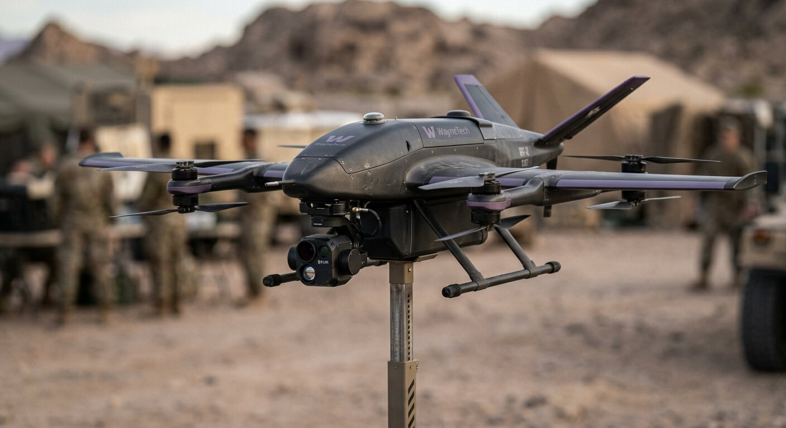
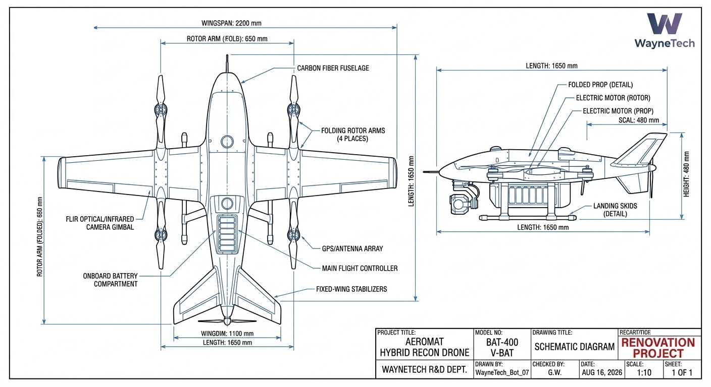

WAYNETECH // DIVISION R&D : AÉRONAUTIQUE & SURVEILLANCE.
Plateforme aérienne A-01 // Transport et déploiement.
Fiche Projet : AÉROMAT (Unité Tactique A01-VTOL)
- Classification :
- interne sécurisé
- Accès Restreint (Niveau 4)
- Nom de code officiel (B2B) :
- Module de reconnaissance aérienne et d'inspection de structures pour zones à haut risque.
- Usage réel sur le terrain :
- Drone tactique autonome à décollage et atterrissage verticaux (VTOL) pour la cartographie 3D en temps réel, l'analyse thermique et le repérage d'objectifs de nuit.


Caractéristiques Générales
- Configuration
- Drone hybride reconnaissance, voilure fixe + rotors
- Modèle
- C-X450
- Envergure
- 2 200 mm
- Longueur
- 1 650 mm
- Hauteur
- 480 mm
- Masse à vide
- ~9,5 kg
- Charge utile de référence
- ~2,5 kg (module capteurs)
- Masse opérationnelle lourde
- ~12 kg
Propulsion
- Configuration
- 4 × rotors à bras pliables (VTOL) + voilure fixe pour vol de croisière
- Bras de rotor
- 650 mm (pliés)
- Alimentation
- Batterie lithium haute densité, module remplaçable
- Temps de charge complète
- ~60 minutes
Performances
- Vitesse de croisière visée
- 95 km/h
- Vitesse maximale visée
- 130 km/h
- Plafond opérationnel visé
- ~3 000 m
- Résistance au vent
- Jusqu'à 55 km/h
- Décollage / atterrissage
- Vertical (VTOL), sans piste nécessaire
Autonomie & Emploi
- Autonomie en vol
- ~2h30
- Rayon d'action opérationnel visé
- ~40 km aller-retour
- Emploi
- Reconnaissance, surveillance, renseignement tactique
- Utilisateurs prévus
- Forces armées, unités de sécurité habilitées
Déploiement
- Bases avancées temporaires, terrain hostile
- Lancement vertical sans infrastructure de piste
- Transport en caisse tactique dédiée (bras repliables)
- Utilisable en environnement urbain comme rural
Signature
- Finition mate gris/noir carbone
- Accents violets discrets sur les extrémités de rotors (non lumineux en usage tactique)
- Faible signature sonore en vol de croisière
- Détection possible par des moyens de surveillance avancés
Avionique & Capteurs
- Caméra optique/infrarouge FLIR sous fuselage
- GPS/antenne array redondante
- Contrôleur de vol principal embarqué
- Fusion des données capteurs en temps réel
- Diagnostic embarqué prédictif
Liaison De Pilotage
- Pilotage automatique ou manuel à distance
- Liaison de données tactique chiffrée
- Retour vidéo temps réel vers station de contrôle
- Mode de retour automatique en cas de perte de liaison
- Compatible relais via véhicule WayneTech (ex. Warden, Viper)
Système
- Architecture électrique redondante
- Basculement automatique en cas de panne d'un rotor
- Diagnostic prédictif du contrôleur de vol
- Modules remplaçables sur le terrain sans outillage lourd
Gestion Thermique
- Dissipation passive du bloc batterie
- Surveillance thermique du contrôleur de vol
- Coupure automatique en cas de surchauffe critique
Protection
- Fuselage en fibre de carbone renforcée
- Gimbal caméra protégé par carénage
- Structure interne redondante pour l'électronique critique
- Aucun blindage lourd (priorité à la légèreté et à l'autonomie)
Armement
- Charge opérationnelle de référence
- ~2 t
- Canon
- Interne
- Configurations
- Air-air / air-sol
- Armement WayneTech
- Spécialisé, quantité limitée
- Gestion
- Numérique
- Autorisation d'emploi
- Pilote
Technologies WayneTech
- Fusion — Fusion avancée des capteurs optiques/infrarouges et aide à l'identification
- Vector — Gestion adaptative du vol hybride (rotors/voilure fixe)
- Gestion thermique WayneTech du bloc batterie
- Wayne Emergency Mode — Atterrissage d'urgence automatique en cas de défaillance critique
Communications
- Communications sécurisées chiffrées
- Liaison de données tactique compatible flotte WayneTech
- Fonctionnement essentiel sans connexion WayneTech centrale
Ecosystème WayneTech : Aeromat Assistance™
- Diagnostic à distance
- Pièces détachées et rotors de rechange
- Maintenance et calibration des capteurs
- Formation au pilotage et à l'analyse du renseignement
- Support technique dédié
Contrôle Des Technologies Sensibles
- Utilisation des fonctions normales par l'opérateur habilité
- Capacités de capteurs avancés soumises à autorisation selon statut du client
- Zones de vol soumises à autorisation selon réglementation
- Contrôle des technologies propriétaires conservé par WayneTech